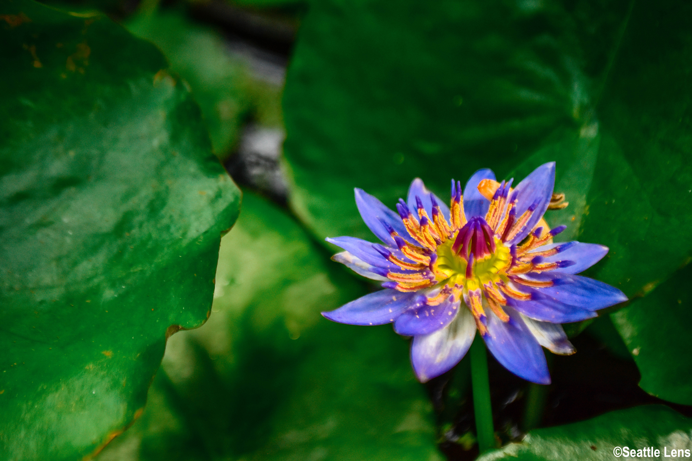

Late last summer, I rekindled my joy for photography. I took a summer course out of the University of Washington talking all about how to use digital cameras. Before that, I had only used my phone, which granted has incredibly high quality, but cannot achieve the zooming distance or setting control a camera can.
For more work like the one above, look in the Photo Gallery